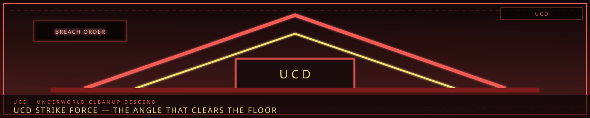

/// RAPID JUMP:
STATUS: ARCHIVE VERIFIED |
CLEARANCE: LEVEL-4 OVERSIGHT |
PROTOCOL: REVERIE DIRECTORATE
ARTICLE
DISCUSSION
SOURCE
HISTORY
YEAR 4,238 · DAWN OF HOPE
FACTIONS RECORD
Underworld Cleanup Descend (UCD)
Contents
- The Second Operation
- The Cast (UCD Task Force)
- ARC Structure Overview
- Arc 1: The Veil Merchants (베일 상인 — Beil Sangin)
- The Story Structure — Passages
- Arc 2: The Memory Washers (기억 세척자 — Gieok Seokjeokja)
- Arc 3: The Harvesters (수확자 — Suhwakja)
- Arc 4: The Debt Brokers (빚 중개인 — Bit Junggaein)
- Arc 5: The Entity Traders (엔티티 거래업자 — Entiti Georaeeopja)
- Arc 6: The Underworld King (지하의 왕 — Jiha-ui Wang)
“The Frays have grown too strong. The underworld has become a city within a city. It is time to clean house.”

The Second Operation
"The Frays have grown too strong. The underworld has become a city within a city. It is time to clean house."
Overview
Full Name: Underworld Cleanup Descend
Abbreviation: UCD
What it is: A joint operation — authorized by the Council of Sighs, executed by the Wardens, supported by the Collectors, guided by the Keepers, and backed by the R.D. The UCD's mission is to dismantle the Frays' power structure, reclaim territory lost to the criminal underworld, and restore order to the Raw.
Why it exists:
- The Frays have grown too powerful — controlling entire districts in Zones B and D
- The Memory Washers are erasing citizens' identities at an alarming rate
- The Entity Traders are trafficking Sorrow Entities — destabilizing containment
- The Harvesters are extracting Echoes by force — creating a black market economy
- The Veil Merchants are selling counterfeit Veil access — undermining the Veil system
- The Debt Brokers are creating phantom debts — destabilizing the Collector's registry
Who runs it: Joint operation:
- Wardens — primary enforcement, tactical operations
- Collectors — debt analysis, financial intelligence
- Keepers — memory forensics, identity verification
- R.D. — entity containment support, technical expertise
- Architects — structural assessment, barricade construction
Duration: 6 months
Threat level: Extreme — the Frays will not go quietly.
The Cast (UCD Task Force)
Structure
The UCD Task Force consists of representatives from each participating faction, working together for the first time.
| # | Codename | Faction | Role | Sorrow |
|---|---|---|---|---|
| 1 | The Commander | Wardens | Task Force Leader | Lost a district to Fray control — carries the guilt |
| 2 | The Auditor | Collectors | Financial Intelligence | Calculated the Frays' true worth — it terrified them |
| 3 | The Investigator | Keepers | Memory Forensics | Found memories that shouldn't exist — Fray experiments |
| 4 | The Handler | R.D. | Entity Specialist | Contains Sorrow Entities the Frays have weaponized |
| 5 | The Engineer | Architects | Structural Specialist | Builds barricades, repairs damage, shapes the battlefield |
| 6 | The Infiltrator | Former Fray | Inside Knowledge | Was a Fray member — defected after seeing too much |
Member Profiles
The Commander — 수장 (Sujang)
Real Name: Taeho (태호) — a name that means "great lake" — he used to be calm
Faction: Wardens
Role: Task Force Leader
Origin: Taeho was a Warden Commander in Zone D — responsible for maintaining order in the Mantle Commons. One night, the Memory Washers struck his district — erasing the identities of an entire neighborhood. Thirty people woke up not knowing who they were. Taeho was the first responder. He saw the blank faces. He heard the screaming. He carried the guilt.
The Sorrow: Taeho failed to protect his district. The Memory Washers operated under his nose. He should have seen it. He should have stopped it. He didn't.
The Question: "If I clean up the underworld, will it undo what happened? Or am I just punishing them for my failure?"
| Field | Detail |
|---|---|
| Sorrow Category | Inner Sorrow (내한) |
| Han Signature | Grudge (Crimson) |
| M.A.W. | The Commander's Baton — a Warden-issue weapon that suppresses Han |
The Auditor — 감사관 (Gamsagwan)
Real Name: Yuna (유나) — a name that means "gentle" — she is anything but
Faction: Collectors
Role: Financial Intelligence
Origin: Yuna was a Collector — the best auditor in Zone C. She could trace any debt, find any hidden asset, calculate any financial crime. When she was assigned to investigate the Frays' finances, she discovered something terrifying: the Frays' combined wealth exceeded the Council's. The underworld was richer than the government.
The Sorrow: Yuna discovered that the system she believed in — the debt economy, the Echo market, the entire financial structure — was being undermined by the Frays. The system is not just unfair; it is broken.
The Question: "If the Frays have more money than the Council, who really runs the city?"
| Field | Detail |
|---|---|
| Sorrow Category | City Sorrow (도한) |
| Han Signature | Weight (Black) |
| M.A.W. | The Auditor's Lens — reveals hidden financial transactions |
The Investigator — 조사관 (Josagwan)
Real Name: Minho (민호) — a name that means "clever and good" — he used to believe in justice
Faction: Keepers
Role: Memory Forensics
Origin: Minho was a Keeper — assigned to the Archive's forensic division. When the Memory Washers' victims were brought in, Minjo was tasked with recovering their memories. What he found horrified him: the memories weren't just erased. They were harvested. The Memory Washers were selling stolen identities on the black market.
The Sorrow: Minho holds the memories of dozens of erased people — memories he recovered but cannot return. He carries their identities like a weight.
The Question: "If I hold someone's memories, am I responsible for their identity? Am I their keeper — or their captor?"
| Field | Detail |
|---|---|
| Sorrow Category | City Sorrow (도한) |
| Han Signature | Void (Pale White) |
| M.A.W. | The Investigator's Needle — extracts and analyzes memory fragments |
The Handler — 관리관 (Gwanligwan)
Real Name: Soojin (수진) — a name that means "guardian" — she guards things that should not exist
Faction: R.D.
Role: Entity Specialist
Origin: Soojin is an R.D. field agent — one of the few who works outside the facility. When the Entity Traders were discovered trafficking Sorrow Entities, the R.D. sent Soojin to assist. She has contained more entities in the field than anyone in the R.D.'s history.
The Sorrow: Soojin has seen what happens when Sorrow Entities are weaponized — used as tools, weapons, currency. She has contained entities that were tortured, starved, provoked. She carries their sorrow.
The Question: "If I contain an entity that was tortured, am I saving it — or imprisoning it twice?"
| Field | Detail |
|---|---|
| Sorrow Category | City Sorrow (도한) |
| Han Signature | Grudge (Crimson) |
| M.A.W. | The Handler's Cage — portable containment device |
The Engineer — 기술자 (Gisulja)
Real Name: Joon (준) — a name that means "talented" — he builds things that break
Faction: Architects
Role: Structural Specialist
Origin: Joon is an Architect — assigned to the UCD for structural assessment and battlefield preparation. He builds barricades, repairs damage, shapes the terrain. He is good at his job. He is also tired of building things that get destroyed.
The Sorrow: Joon has built structures in Zone B that were destroyed by Han overflow. He has built barricades that were torn down by Frays. He has built shelters that collapsed under the weight of sorrow. He builds, and the city breaks.
The Question: "If everything I build breaks, why do I keep building? Is it hope — or habit?"
| Field | Detail |
|---|---|
| Sorrow Category | Inner Sorrow (내한) |
| Han Signature | Weight (Black) |
| M.A.W. | The Engineer's Trowel — shapes Han with precision |
The Infiltrator — 잠입자 (Jamiibja)
Real Name: Unknown — they go by "Echo" — a name they chose themselves
Faction: Former Fray (defected)
Role: Inside Knowledge
Origin: Echo was a member of the Memory Washers — one of their best operatives. They erased memories, harvested identities, sold them on the black market. They were good at it. Then they erased a child's memory — and the child Fractured. Echo walked away. They defected to the Wardens. They offered their knowledge in exchange for protection.
The Sorrow: Echo carries the guilt of every memory they erased. They don't know how many. They stopped counting.
The Question: "If I help the UCD destroy the Frays, am I atoning — or am I just switching sides?"
| Field | Detail |
|---|---|
| Sorrow Category | Inner Sorrow (내한) |
| Han Signature | Void (Pale White) |
| M.A.W. | The Infiltrator's Mask — conceals identity, mimics others |
ARC Structure Overview
- Arc 1: The Veil Merchants (Zone D)
- Passage 1: Intelligence — The Auditor traces the counterfeit Veil network
- Passage 2: Infiltration — Echo leads the team into the Merchant's territory
- Passage 3: The Factory — Where Fake Veil-Stones are made
- Passage 4: The Confrontation — The Merchants fight back
- Passage 5: The Truth — The Merchants are protecting something
- Passage 6: Return — The first Fray falls
- Arc 2: The Memory Washers (Zone B + C)
- Passage 1: The Victims — The Investigator studies the erased
- Passage 2: The Wash-Rig — Finding the operation
- Passage 3: The Harvest — Where do the memories go?
- Passage 4: The Confrontation — The Washers are desperate
- Passage 5: The Choice — Erase the Washers, or rehabilitate them?
- Passage 6: Return — The second Fray falls
- Arc 3: The Harvesters (Zone B)
- Passage 1: The Black Market — Tracing the illegal Echo trade
- Passage 2: The Harvest Hook — Understanding the weapon
- Passage 3: The Victims — People stripped of their sorrow
- Passage 4: The Confrontation — The Harvesters are ruthless
- Passage 5: The Source — Where do the Echoes come from?
- Passage 6: Return — The third Fray falls
- Arc 4: The Debt Brokers (Zone C)
- Passage 1: The Phantom Debts — The Auditor finds debts that don't exist
- Passage 2: The Transfer Pad — Understanding the technology
- Passage 3: The Conspiracy — The Brokers are connected to the Council
- Passage 4: The Confrontation — The Brokers are powerful
- Passage 5: The Truth — The system itself is complicit
- Passage 6: Return — The fourth Fray falls
- Arc 5: The Entity Traders (Zone D + E)
- Passage 1: The Containment Cubes — The Handler finds trafficked entities
- Passage 2: The Auction — Where entities are sold
- Passage 3: The Warehouse — Where entities are stored
- Passage 4: The Confrontation — The Traders are desperate
- Passage 5: The Entity — A trafficked entity that has learned to hate
- Passage 6: Return — The fifth Fray falls
- Arc 6: The Underworld King (Zone B — Deep)
- Passage 1: The Throne — Finding the Frays' true leader
- Passage 2: The King's Court — The five Fray leaders united
- Passage 3: The Truth — The King is not what they expected
- Passage 4: The Battle — The final confrontation
- Passage 5: The Choice — Destroy the underworld, or reform it?
- Passage 6: Return — The UCD ends. The city changes.
Arc 1: The Veil Merchants (베일 상인 — Beil Sangin)
Zone D — The Mask Market
"The Veil protects us. But what protects us from those who sell false Veils?"
Overview
The UCD's first mission targets The Veil Merchants — a Fray that sells counterfeit Veil access to citizens who cannot afford the real thing. The Merchants operate in Zone D's Mask Market, hidden among legitimate traders.
Mission objective: Locate the Veil Merchant operation. Shut it down. Capture the leadership. Return alive.
Duration: 2 weeks
Threat level: High — the Merchants are armed, desperate, and embedded in civilian territory.
Chapter 1: Intelligence
The briefing room was cold — colder than it should have been. The UCD Task Force gathered around a table covered in documents, maps, and crystallized Echo-records.
Taeho stood at the head of the table. His face was hard — the face of a man who had seen too much and forgiven too little.
"The Council has authorized the UCD's first operation," he said. "Target: The Veil Merchants. A Fray operating in Zone D's Mask Market. They sell counterfeit Veil-Stones to citizens who cannot afford the real thing."
"How many?" the Sentinel (Harin) asked.
"Unknown. Hundreds. Maybe thousands." The Auditor (Yuna) stepped forward, spreading her documents across the table. "I've traced the financial anomalies — impossible Veil-tax payments, citizens with access they couldn't afford, Echo-transactions that don't match any legitimate source."
"The Stones work?" the Handler (Soojin) asked.
"Partially," Yuna said. "They suppress Han — but not completely. And they degrade over time. A Stone that works today might fail tomorrow. And when it fails..."
"The user is exposed," the Engineer (Joon) finished. "Raw Han. No protection. Fracture risk."
"Exactly." Yuna's voice was flat. "The Merchants are selling false safety. And people are paying for it with their lives."
"Why didn't the Wardens catch them?" the Investigator (Minho) asked.
The Infiltrator (Echo) spoke from the corner — leaning against the wall, arms crossed, face hidden behind a mask.
"Because the Merchants are smart," Echo said. Their voice was calm — the calm of someone who had been on the other side. "I used to work with them. They don't sell in the open. They use the Mask Market's identity fluidity — everyone wears masks, everyone hides. The Merchants blend in."
"Can you lead us to them?" Taeho asked.
Echo nodded. "I know the operation. I know the leaders. I know the safe houses. But it won't be easy. The Merchants are armed. And they're desperate."
"Desperate people make mistakes," Taeho said. "That's why we're here."
Chapter 2: Infiltration
The Mask Market was alive.
Stalls selling masks of every shape and size — some decorative, some functional, some dangerous. Merchants hawking Echoes — "Genuine sorrow! Fresh grief! Best price!" Performers dancing in the streets — their movements too graceful, their smiles too wide. The air was thick with Han — the Veil was thinner here, and the Raw bled through.
Echo led the team through the crowd — their masks disguising them, their movements casual, their presence unnoticed.
"Stay close," Echo said, their voice barely audible over the market's din. "The Merchants have lookouts. If they see the Wardens, they'll scatter."
"We're not Wardens," Taeho said. "We're the UCD. We don't announce ourselves."
"Good," Echo said. "Because the Merchants don't announce themselves either."
They moved through the market — past stalls selling memories, past dancers performing sorrow-songs, past children playing with Echo-toys. The Mask Market was the most diverse district in Somnarak — and the most dangerous.
Echo stopped at a back alley — a narrow passage between two buildings, lit by a single Han-lamp. The lamp was old — its light flickered, casting shadows that moved like living things.
"The entrance is here," Echo said, pointing to a door — unmarked, unremarkable, forgotten. "Behind this door is the Merchant's workshop. Where the counterfeit Stones are made."
"How many inside?" Soojin asked.
"Three Merchants. A dozen workers. And the leader — they call her 'The Veil Weaver.'"
"The Veil Weaver," Yuna repeated. "Former Keeper. I've heard the name."
"She was one of the best," Echo said. "Before she left. Before she started selling false Veils."
"Why did she leave?" Minho asked.
Echo paused. "Because she saw what the Veil really does. And she couldn't live with it."
Chapter 3: The Factory
They breached the door.
The workshop was dark — lit by Han-lamps that cast a sickly yellow glow. The air was thick with Han-vapor — a false sense of safety, a manufactured comfort. Workers hunched over tables, grinding Han-crystal into powder, mixing it with Echoes, pressing it into Stone shapes.
"Freeze!" Taeho shouted. "UCD! You are under arrest!"
The workers panicked — scattering, dropping their tools, screaming. The three Merchants drew weapons — crude Han-crystal blades, improvised explosives.
"Don't move!" Harin barked, shield raised. "Drop your weapons!"
The Merchants didn't listen. They attacked.
The first Merchant swung a blade — crude, heavy, made of solidified sorrow. Harin blocked with her shield — the impact jarred her arms, but she held.
"Pugnahan!" she shouted, and struck back — a focused burst of rage that sent the Merchant sprawling.
The second Merchant threw an explosive — a ball of unstable Han-energy that arced through the air. Soojin dove — her Handler's Cage extending, containing the explosive before it detonated.
"Contained!" she shouted. "But I can't hold it long!"
The third Merchant ran — heading for a back exit. Echo intercepted — moving fast, silent, a shadow among shadows. The Merchant didn't see them until it was too late.
"Going somewhere?" Echo said, and tripped the Merchant with a sweep of their leg.
The fight was short — the UCD was better trained, better equipped, better coordinated. The Merchants fought with desperation — but desperation doesn't equal skill. Within minutes, the three Merchants were subdued, the workers contained.
But the leader — The Veil Weaver — was not there.
"She's not here," Echo said, scanning the workshop. "She never is. She operates from somewhere else. The workshop is just... production."
"Where is she?" Taeho asked.
"I don't know," Echo said. "But I know someone who does."
Chapter 4: The Truth
The workers were interrogated — not harshly, but firmly. They were not criminals. They were citizens — desperate, poor, trying to survive. The counterfeit Veil-Stones were their livelihood.
"We don't want to do this," one worker said — a woman, old, her hands scarred from years of grinding crystal. "But the real Veil is too expensive. We can't afford it. Without the Stones, we'd be in the Raw. And the Raw... the Raw is where people Fracture."
"So you sell false safety," Yuna said.
"We sell hope," the worker replied. "False hope, maybe. But hope."
"Hope that degrades," Minho said. "Hope that fails. Hope that exposes people to raw Han."
"Better than no hope," the worker said.
The team found something else in the workshop — something unexpected.
"Commander," Soojin said. Her voice was quiet — the quiet of someone who has seen something they cannot unsee. "You need to see this."
In the back of the workshop — hidden behind a false wall — was a room. Inside the room: a Sorrow Entity.
Not a powerful one — a minor entity, barely coherent. It was small — the size of a child — made of crystallized sorrow. It was sitting in the corner, trembling. Chains of Han-crystal held it in place.
"They're using an entity," Soojin said. "A living entity. As raw material."
"That's illegal," Taeho said.
"That's Taboo," Soojin corrected. Her voice was hard. "Taboo 5 — No Sorrow Synthesis. They're manufacturing sorrow."
"The entity is alive?" Minho asked.
"Barely," Soojin said. She knelt beside the entity. It trembled at her presence — afraid, confused, in pain. "It's a fragment — barely coherent. But it's alive. And it's suffering."
"Can it be saved?" Taeho asked.
"I don't know," Soojin said. "But I can try."
Chapter 5: The Veil Weaver
They found The Veil Weaver three days later — through Echo's network, through the worker's confessions, through the Auditor's financial tracing.
She was in the Forgotten Market — Zone B's abandoned commerce district. She was sitting in a crumbling stall, surrounded by counterfeit Stones, waiting.
"I knew you'd come," she said. Her voice was calm. "I've been expecting you."
"You're under arrest," Taeho said.
"I know," The Veil Weaver said. "But before you take me, let me explain."
She was old — older than she looked. Her eyes were tired. Her hands were scarred — years of grinding Han-crystal. She wore no mask — her face was bare, exposed, vulnerable.
"I was a Keeper," she said. "Once. Before the Veil. Before the system. I preserved memories. I protected identities. Then the system came — the Veil, the Collectors, the Wardens. And suddenly, my work was... regulated. Controlled. Commodified."
"So you started selling counterfeit Veils," Yuna said.
"I started selling freedom," The Veil Weaver said. "The Veil is not protection. It is control. It suppresses sorrow — but it also suppresses life. The people in the Veil are numb. They don't feel. They don't live. They just... exist."
"And the Raw?" Taeho asked.
"The Raw is where people live," she said. "It's dangerous. It's painful. But it's real. My Stones give people a choice — a little Veil, a little Raw. A balance."
"You're using a Sorrow Entity as raw material," Soojin said. Her voice was cold. "That's Taboo."
The Veil Weaver's eyes hardened. "The entity was dying. It was a fragment — barely coherent. I gave it purpose. I gave it use. Is that worse than letting it fade?"
"You didn't give it purpose," Minho said. "You gave it suffering."
The Veil Weaver was silent for a long moment.
"Maybe," she said finally. "But suffering is the only thing this city understands."
Chapter 6: The Choice
Taeho stood before The Veil Weaver. The team waited. The Mask Market buzzed around them — oblivious, alive, hiding.
"You broke the law," he said. "You violated Taboo 5. You sold counterfeit Veils. You endangered citizens."
"I gave them choice," she said.
"You gave them false hope."
"Is false hope worse than no hope?"
Taeho was silent for a long moment. He looked at the team — at Echo, who had been on the other side; at Soojin, who had freed the entity; at Yuna, who had traced the money; at Minho, who had seen the suffering; at Harin, who had fought the Merchants; at Joon, who had sealed the workshop.
"Take her," he said finally. "Seal the workshop. Free the entity. Report to the Council."
As the Wardens led The Veil Weaver away, she looked back at the team.
"You think you're saving the city," she said. "But the city doesn't want to be saved. It wants to be felt."
Engagement Protocol: The Mask Market Raid
Location: Zone D — The Mask Market, back alley workshop
Enemies: 3 Veil Merchants (armed), 12 workers (unarmed), 1 captive Sorrow Entity
Objective: Capture the Merchants, secure the workshop, free the entity
Duration: 5 minutes (combat time)
Turn 1: Positioning
Taeho raises his fist — the signal. The team positions:
- Harin (Vanguard) — left of the door, shield ready
- Echo (Infiltrator) — right of the door, shadow-cloak active
- Soojin (Handler) — behind Harin, containment gear ready
- Yuna (Auditor) — rear, recording equipment active
- Minho (Investigator) — rear, observation tools ready
- Joon (Engineer) — rear, barrier equipment ready
Taeho looks at the team. Nods.
Taeho: "On my mark. Three... two... one..."
He kicks the door.
Turn 2: Breach
The door crashes open. The workshop is dark — Han-lamps cast sickly yellow light. The air is thick with Han-vapor — false safety, manufactured comfort.
Inside:
- 12 workers — hunched over tables, grinding crystal, mixing Echoes
- Merchant 1 (left wall) — heavy-set, Han-crystal blade on hip
- Merchant 2 (center) — thin, holding an unstable Han-energy explosive
- Merchant 3 (back) — fast, already moving toward the exit
Taeho: "Freeze! UCD!"
The workers panic — screaming, scattering, dropping tools. The room erupts into chaos.
Merchant 2 sees the team. Their eyes widen. They raise the explosive.
Merchant 2: "Don't come closer!"
Turn 3: Harin vs. Merchant 1
Harin moves to Merchant 1 — shield raised, Aegis glowing.
Merchant 1 draws their blade — heavy, slow, made of solidified sorrow. They swing — a wide arc aimed at Harin's midsection.
Harin blocks — the Aegis absorbs the impact. The blade bounces off. Harin's arms jar — but she holds.
Harin: "Drop the weapon. Now."
Merchant 1 swings again — faster this time, desperate. Harin blocks again. And again. The Merchant is strong — but slow. Harin reads their pattern.
Harin: "Pugnahan!"
She strikes — a focused burst of rage. Her fist connects with Merchant 1's chest. The blow sends them staggering — they crash into a table, scattering tools and crystal.
Merchant 1 tries to rise — but Harin is there, shield pressing down.
Harin: "Stay down."
Merchant 1 stays down.
Turn 4: Soojin vs. Merchant 2
Merchant 2 throws the explosive — a ball of unstable Han-energy arcs through the air.
Merchant 2: "If I can't have it, nobody can!"
Soojin steps forward — her Handler's Cage extending. The cage is a portable containment device — Han-crystal bars that form a small prison.
She activates the cage — the bars extend, catching the explosive mid-air. The device hums — containing the energy. The explosive pulses — fighting the containment.
Soojin: "Contained! But it's fighting — I can't hold it long!"
Taeho: "Release it! Safely!"
Soojin focuses — her Resolve attribute activating. She calms the explosive — soothing the Han-energy, reducing its volatility. The pulse slows. The glow dims.
Soojin: "Safe."
She carefully discharges the energy — a controlled release. The Handler's Cage glows — then dims. The explosive dissolves into harmless Han-vapor.
Merchant 2 stares — disarmed, defeated.
Turn 5: Echo vs. Merchant 3
Merchant 3 is fast — already at the back exit, hand on the handle.
Merchant 3: "You'll never catch me!"
Echo moves — silent, a shadow among shadows. Their Shadow Cloak activates — rendering them nearly invisible in the workshop's dim light.
Merchant 3 doesn't see them. They pull the handle — the door opens —
And Echo is there.
Echo: "Going somewhere?"
Echo sweeps Merchant 3's legs — a precise, practiced motion. Merchant 3 falls — hard — hitting the ground with a thud.
Echo pins them — knee on their back, hands restrained.
Echo: "You should have run faster."
Merchant 3 struggles — then stops. Defeated.
Turn 6: Civilian Control
Taeho: "Secure the civilians! Nobody leaves!"
The 12 workers are scattered — some hiding under tables, some pressed against walls, some frozen in place.
Yuna moves through the workshop — calm, professional, recording everything.
Yuna: "Stay calm. You're not under arrest. We just need you to stay where you are."
A worker — old, scarred, trembling — looks up at her.
Worker: "Please... we were just trying to survive..."
Yuna: "I know. And we'll sort this out. But right now, I need you to stay calm."
Joon deploys barriers at the exits — Han-crystal walls that seal the workshop. No one gets in. No one gets out.
Joon: "Exits sealed. We're secure."
Turn 7: Discovery
Minho moves through the workshop — his Lens scanning, cataloguing, recording.
He finds the false wall — a section of wall that doesn't match the rest. The crystal is different — darker, colder, pulsing faintly.
Minho: "Commander. You need to see this."
Taeho moves to the wall. Presses his hand against it. The wall is warm — but the warmth is wrong. Not Han-warm. Alive-warm.
Taeho: "Open it."
Joon steps forward — his Hammer in hand. He strikes the wall — once, twice, three times. The wall cracks. Shatters.
Behind it: a room. Small. Dark. A single Han-lamp, flickering.
Inside: a Sorrow Entity.
Turn 8: The Entity
The entity is small — the size of a child. It is made of crystallized sorrow — translucent, trembling, barely coherent. Chains of Han-crystal hold it in place — anchored to the floor, the walls, the ceiling.
The entity does not attack. It does not speak. It simply trembles.
Soojin kneels beside it. Her voice is soft.
Soojin: "Hey. Hey. It's okay. We're here to help."
The entity flinches — then looks at her. Its eyes are hollow — but there is something in them. Not intelligence. Not awareness. Something simpler. Something like... hope.
Soojin: "Can you understand me?"
The entity does not speak. But it stops trembling.
Soojin: "I'll take that as a yes."
She reaches for the chains — Han-crystal, cold, heavy. She breaks them — one by one. The chains resist — but Soojin's Resolve holds. The chains shatter.
The entity is free.
It looks at Soojin. Then it looks at the team. Then it looks at the door — the way out.
Soojin: "You can go. If you want."
The entity does not move. It stays — looking at Soojin. Looking at the team. Looking at the world it has never seen.
Soojin: "Or you can stay. We'll take care of you."
The entity stays.
Turn 9: Assessment
Taeho: "Report."
Yuna: "200+ counterfeit Veil-Stones. Financial records. Manufacturing equipment. This was a full operation."
Minho: "1 captive Sorrow Entity — Taboo 5 violation. Sorrow Synthesis. The entity was being used as raw material."
Soojin: "Entity is stable. Low coherence — barely formed. But alive. And aware."
Joon: "Workshop sealed. Barriers deployed. No one gets in or out without authorization."
Echo: "3 Merchants secured. 12 civilians contained. No casualties."
Harin: "No injuries. All targets neutralized."
Taeho: "Good work. Secure the evidence. Contain the Merchants. Prepare for transport."
He looks at the entity — small, trembling, looking at Soojin with hollow eyes.
Taeho: "And take care of that entity. It's been through enough."
Turn 10: Aftermath
Casualties: None — all Merchants captured, all workers contained, entity freed.
Evidence: 200+ counterfeit Veil-Stones, 1 captive Sorrow Entity, financial records, manufacturing equipment, worker testimonies.
Entity status: Transferred to R.D. facility — Floor 2, Maw's Keep. Observation Level 0. Pending classification.
Merchants: Contained — awaiting transport to Wardens' custody.
Workers: Released with warnings — they were victims, not criminals.
Next steps: Locate The Veil Weaver. Shut down the operation permanently.
Arc 1 — Key Discoveries
| Discovery | Implication |
|---|---|
| Counterfeit Veil network | Citizens cannot afford real Veil access |
| Entity used as raw material | Taboo 5 violation — Sorrow Synthesis |
| The Veil Weaver | Former Keeper — understands the system's flaws |
| The Veil is control | Suppresses life, not just sorrow |
| The Raw is freedom | Some choose the Raw for its authenticity |
| False hope | The city's system creates demand for alternatives |
Arc 1 — Character Development
| Character | Development |
|---|---|
| Taeho (Commander) | Faces moral complexity — the Merchants are not villains |
| Yuna (Auditor) | Traces the financial network — sees the system's flaws |
| Minho (Investigator) | Studies the entity — Taboo violation horrifies him |
| Soojin (Handler) | Frees the entity — sees the cost of using Sorrow Entities |
| Joon (Engineer) | Seals the workshop — builds barriers against future operations |
| Echo (Infiltrator) | Leads the team — confronts their former associates |
The Story Structure — Passages
(Detailed Passages will be written one at a time, following the same format as SED Arc 1)
Arc 2: The Memory Washers (기억 세척자 — Gieok Seokjeokja)
Zone B + C — The Wash District
"They don't just erase memories. They harvest them. They sell them. They turn identity into currency."
Overview
The UCD's second mission targets The Memory Washers — a Fray that erases citizens' memories and sells them on the black market. The Washers operate in Zone B's Old Lament and Zone C's Collector's Row, using a specialized device called the Wash-Rig.
Mission objective: Locate the Wash-Rig operation. Shut it down. Recover stolen memories. Capture the Washers.
Duration: 3 weeks
Threat level: High — the Washers are desperate, and their technology is dangerous.
Chapter 1: The Victims
The victims started appearing three weeks ago.
Citizens waking up not knowing who they were. Blank faces. Empty eyes. People who had lives, families, histories — reduced to shells. The Keepers were overwhelmed — too many victims, too few resources.
Minho: "The memories aren't just erased. They're harvested. The Wash-Rig doesn't destroy — it extracts. The memories are stored somewhere."
Yuna: "On the black market. Identity is the most valuable commodity. A complete identity — memories, history, personality — sells for more than a thousand Echoes."
Taeho: "Who's buying?"
Yuna: "People who want to become someone else. Criminals who need new identities. Citizens who want to forget. The demand is... infinite."
Chapter 2: The Wash-Rig
The team tracked the Wash-Rig to an abandoned archive in Zone B — a Keeper facility that had been repurposed.
The building was dark — Han-lamps casting long shadows. The air smelled of old crystal and new sorrow. Inside, the team found the Wash-Rig — a massive device, made of Han-crystal and stolen Keeper technology.
The device was designed to extract memories — to pull them from a person's mind like pulling teeth. The process was painful. The process was irreversible. The process left the victim hollow.
Soojin: "This is Keeper technology. Modified. Corrupted. Whoever built this knew what they were doing."
Minho: "They did. The Wash-Rig uses the same principles as the Archive's memory preservation systems. But instead of preserving... it extracts."
Echo: "I know this rig. I helped build it."
The team turned to Echo. Their face was hidden — but their voice was heavy.
Echo: "When I was with the Memory Washers, I was the technician. I maintained the rig. I optimized the extraction process. I made it more efficient. More... profitable."
Taeho: "Can you shut it down?"
Echo: "I can. But first, we need to find where the memories are stored. If we just destroy the rig, the memories are lost forever."
Chapter 3: The Harvest
The team found the storage facility beneath the Wash-Rig — a hidden chamber filled with crystallized memories.
Thousands of them. Each one a person's identity — their name, their history, their personality, their soul. The crystals glowed faintly — pulsing with the weight of stolen lives.
Minho: "This is... horrifying. Each crystal contains a complete identity. A lifetime of memories. A person's entire existence."
Yuna: "And they're for sale. Each crystal is worth more than a citizen earns in a year."
Soojin: "Can they be returned? Can the memories be restored?"
Minho: "If the victim is still alive... if the crystal is intact... if the extraction wasn't too long ago... maybe. But the process is risky. The victim's mind might reject the memories. Or the memories might have degraded."
Echo: "The Washers don't care about restoration. They care about profit. The crystals are sold as-is. The buyers don't care about the victims — they just want the identity."
Chapter 4: The Confrontation
The Washers found them.
A dozen operatives — armed, desperate, cornered. The leader — a woman with hollow eyes and scarred hands — stepped forward.
Washer Leader: "You shouldn't have come here. This is our territory. Our business. Our survival."
Taeho: "You're erasing people's identities. You're selling stolen lives. This is Taboo."
Washer Leader: "Taboo? The system erases people every day. The Veil suppresses their emotions. The Collectors take their Echoes. The Wardens enforce their compliance. We just... do it more efficiently."
Minho: "The system doesn't steal identities. It doesn't turn people into shells."
Washer Leader: "No? What do you call a citizen in the Veil? They don't feel. They don't think. They don't *live. They're shells — just like our victims. The difference is, our shells are honest about what they are."*
The Washers attacked — desperate, cornered, fighting for survival.
Chapter 5: The Choice
The fight was brutal — the Washers fought with the desperation of people who had nothing to lose.
Harin held the line — her shield absorbing blow after blow. Echo flanked — moving through the shadows, disabling Washers from behind. Soojin contained — her Handler's Cage capturing operatives who tried to flee.
But the leader fought hardest — her eyes blazing with fury, her voice cracking with desperation.
Washer Leader: "You think you're saving the city? You're just enforcing a different kind of erasure! The system erases us — our poverty, our desperation, our need. You call it order. We call it survival!"
Taeho: "Survival doesn't require stealing other people's lives."
Washer Leader: "In this city, it does!"
The fight ended — the Washers subdued, the leader captured. But her words lingered.
Chapter 6: The Return
The team returned to the surface — carrying the stolen memories, the captured Washers, and the weight of what they had learned.
Minho: "The memories can be restored. Most of them. The victims will recover — but it will take time."
Yuna: "The black market for identities is larger than we thought. The Washers were just one node in a network."
Soojin: "And the victims? What happens to them?"
Taeho: "We restore what we can. We protect what we can't. And we make sure this doesn't happen again."
Echo: "It will happen again. The demand doesn't disappear. The need doesn't disappear. The system creates the need — and the need creates the crime."
Engagement Protocol: The Wash-Rig Raid
Location: Zone B — Abandoned Archive, Wash-Rig facility
Enemies: 12 Memory Washers (armed), 1 Washer Leader (critical), environmental hazards (memory destabilization)
Objective: Shut down the Wash-Rig, capture the Washers, recover stolen memories
Duration: 12 turns (Medium battle)
Threat level: High — the Washers are desperate, the technology is unstable
Turn 1: Approach
The team moves through the abandoned archive — dark corridors, flickering Han-lamps, the air thick with the smell of old crystal.
Echo: "The main facility is below. Three levels down. The Wash-Rig is on the lowest level."
Taeho: "Entry points?"
Echo: "One main staircase. One service elevator. One emergency exit — but it's sealed from the inside."
Harin: "We take the stairs. Slow and steady."
Joon: "I hate stairs."
Harin: "You hate everything."
Joon: "I hate that you're right."
Turn 2: First Contact
The team descends — Harin leading, shield raised. The staircase is narrow — barely wide enough for two people side by side.
At the bottom: a door. Heavy. Sealed.
Harin: "Locked."
Joon: "I can breach it. But it'll be loud."
Taeho: "Do it."
Joon strikes the door — his Hammer connecting with the lock. The door shatters — revealing the facility beyond.
Inside: a dozen Washers — already alerted, already armed.
Washer: "Intruders! Protect the rig!"
Turn 3: Harin Holds the Line
The Washers charge — desperate, armed with crude weapons.
Harin steps forward — shield raised, Aegis glowing. She absorbs the first blow — a heavy strike that jars her arms. Then the second. Then the third.
Harin: "I can hold them! Push forward!"
The team pushes through — Harin holding the line, the others moving past her. The Washers throw everything they have — blades, explosives, Han-energy blasts. Harin absorbs it all.
Harin: "They're strong! Desperate! I can't hold forever!"
Taeho: "You don't have to! Just long enough!" Echo: "She always says she can't hold forever. She always does."
Harin: "Shut up, Echo!"
Echo: "See? Still holding."
Turn 4: Echo Flanks
Echo moves — silent, a shadow among shadows. Their Shadow Cloak activates — rendering them nearly invisible.
They circle behind the Washers — moving through the facility's corridors, disabling operatives one by one. A quick strike to the back of the neck. A precise application of Han-suppression. A body dropping silently to the floor.
Echo: "Three down. Nine remaining."
Taeho: "Keep moving. We need the leader."
Echo: "I know where she is. The control room. Third level."
Turn 5: Soojin Contains
A Washer throws an explosive — a ball of unstable Han-energy that arcs through the air.
Soojin steps forward — her Handler's Cage extending. The cage catches the explosive — containing it, suppressing it, neutralizing it.
Soojin: "Contained! But there's more!"
More explosives fly — Soojin catches them one by one, her Resolve attribute activating, calming the energy, reducing volatility.
Soojin: "I can't keep this up! They're throwing everything!"
Taeho: "Hold them! We're almost there!"
Turn 6: The Wash-Rig
The team reaches the Wash-Rig — massive, humming, pulsing with stolen memories.
The device is active — extracting memories from a victim strapped to the table. The victim is screaming — not in pain, but in loss. The rig is pulling their identity from their mind.
Minho: "We need to shut it down! Now!"
Echo: "The control panel is there. But the leader is guarding it."
The Washer Leader stands before the control panel — her eyes blazing, her hands on the controls.
Washer Leader: "You won't shut it down. You won't destroy my work. You won't erase what I've built."
Turn 7: Minho Fights for Memories
Minho steps forward — his Needle drawn, his Lens scanning.
Minho: "The memories are degrading! The extraction is destabilizing them! We need to stop it — now!"
The Washer Leader doesn't move. She presses a button — the rig accelerates, the extraction intensifying.
Washer Leader: "The memories are mine. I took them. I own them. You can't have them."
Minho: "They're not yours! They're people's lives! Their identities! Their souls!"
Minho charges — his Needle extended, aiming for the control panel. The Washer Leader blocks — her own weapon drawn, a blade of crystallized memory.
The fight is brutal — Minho fighting for the memories, the Washer Leader fighting for her livelihood.
Turn 8: The Rig Overloads
The rig sparks — the extraction destabilizing, the stolen memories threatening to cascade.
Joon: "The rig is overloading! If it cascades, the memories are lost!"
Soojin: "Can you stabilize it?"
Joon: "Maybe. But I need access to the control panel."
Taeho: "Minho! Clear the way!"
Minho fights harder — his Needle striking with precision, driving the Washer Leader back. Joon moves to the control panel — his Trowel extending, stabilizing the rig's energy flow.
Joon: "Stabilizing! But it's fighting me!"
Soojin: "I'll help!"
Soojin joins Joon — her Resolve attribute calming the rig, reducing its volatility. Together, they stabilize the device — the memories safe, the extraction stopped.
Turn 9: The Leader Breaks
The Washer Leader sees her rig stabilized — her work saved, but not by her. She breaks.
Washer Leader: "No... no... my work... my life..."
She falls to her knees — her weapon dropping, her eyes empty. The fight leaves her — replaced by despair.
Washer Leader: "You don't understand. You can't understand. The memories... they're all I have. They're all I am."
Minho: "They're not yours. They belong to the people you stole them from."
Washer Leader: "They belong to no one! They're just... memories. Fragments. Echoes of lives that don't matter anymore."
Taeho: "They matter to the people who lived them."
Turn 10: The Victims
The team frees the victims — citizens strapped to the extraction tables, their memories partially harvested.
Some are conscious — confused, disoriented, not knowing who they are. Some are unconscious — their minds too damaged by the extraction. Some are screaming — the loss of identity too much to bear.
Soojin: "We need medical teams. Now. The victims need stabilization."
Minho: "The memories are intact. We can restore them. But it will take time."
Yuna: "How many victims?"
Echo: "Dozens. Maybe hundreds. The Washers have been operating for years."
Taeho: "We save who we can. We restore what we can. And we make sure this never happens again."
Turn 11: Assessment
Taeho: "Report."
Yuna: "Financial records recovered. The Washers operated a black market for identities — selling stolen memories to buyers across the city."
Minho: "12 victims freed. Memories partially intact. Restoration possible — but lengthy."
Soojin: "Rig stabilized. Memories stored safely. Ready for transport to the Archive."
Joon: "Facility secured. Barriers deployed. No one gets in or out."
Echo: "12 Washers captured. Leader subdued. Operation dismantled."
Harin: "No casualties on our side. Two minor injuries. All targets neutralized."
Taeho: "Good work. Secure the evidence. Contain the Washers. Begin memory restoration."
Turn 12: Aftermath
Casualties: None on UCD side — 12 Washers captured, leader subdued.
Evidence: Wash-Rig (stabilized), stolen memories (recovered), financial records, black market contacts.
Victim status: 12 victims freed — memory restoration underway. Dozens more victims identified — search ongoing.
Washer status: All contained — awaiting transport to Wardens' custody.
Next steps: Restore stolen memories. Dismantle the black market network. Move to Arc 3.
Arc 2 — Key Discoveries
| Discovery | Implication |
|---|---|
| Memory harvesting is profitable | Identity is the most valuable black market commodity |
| Keeper technology was stolen | The Washers had inside help |
| Victims can be restored | But the process is lengthy and risky |
| The black market is larger than expected | The Washers are one node in a network |
| The system creates demand | Poverty and desperation drive the market |
| Echo's past | Echo helped build the rig they now dismantle |
Arc 2 — Character Development
| Character | Development |
|---|---|
| Taeho (Commander) | Faces the cost of the black market — victims are real people |
| Minho (Investigator) | Fights for the memories — sees identity as sacred |
| Soojin (Handler) | Stabilizes the rig — saves the stolen memories |
| Joon (Engineer) | Prevents cascade — protects the evidence |
| Echo (Infiltrator) | Confronts their past — helped build what they now destroy |
| Yuna (Auditor) | Traces the financial network — sees the system's failures |
Arc 3: The Harvesters (수확자 — Suhwakja)
Zone B — The Echo Gardens
"They don't just take Echoes. They take the sorrow that makes them. They strip people of their grief — and sell it."
Overview
The UCD's third mission targets The Harvesters — a Fray that extracts Echoes from citizens by force, using a weapon called the Harvest Hook. The Harvesters operate in Zone B's Echo Gardens, targeting the vulnerable and the desperate.
Mission objective: Locate the Harvest Hook operation. Shut it down. Recover stolen Echoes. Capture the Harvesters.
Duration: 3 weeks
Threat level: Critical — the Harvesters are ruthless, and their weapon is dangerous.
Chapter 1: The Black Market
The Echo black market was thriving.
Stolen Echoes — fragments of crystallized sorrow — sold openly in the Raw. The prices were low. The quality was high. The source was unknown.
Yuna: "The Echoes are real. Genuine sorrow. But they're not registered. Not tracked. Not taxed. They're stolen."
Soojin: "From where?"
Yuna: "From citizens. The Harvesters target the vulnerable — the poor, the sick, the grieving. They extract their Echoes — forcibly — and sell them on the black market."
Taeho: "How?"
Echo: "The Harvest Hook. A weapon that extracts Echoes from a person's body. It's painful. It's permanent. It leaves the victim... empty."
Chapter 2: The Harvest Hook
The team found the Harvest Hook in a warehouse in Zone B — a massive device, made of Han-crystal and stolen R.D. technology.
The weapon was designed to extract Echoes — to pull them from a person's body like pulling teeth. The process was painful. The process was irreversible. The process left the victim without sorrow — without grief, without emotion, without feeling.
Soojin: "This is R.D. technology. Modified. Corrupted. Whoever built this knew what they were doing."
Minho: "They did. The Harvest Hook uses the same principles as the R.D.'s Echo extraction systems. But instead of extracting from entities... it extracts from people."
Echo: "I know this weapon. I helped build it."
The team turned to Echo. Their face was hidden — but their voice was heavy.
Echo: "When I was with the Harvesters, I was the technician. I maintained the hook. I optimized the extraction process. I made it more efficient. More... profitable."
Taeho: "Can you shut it down?"
Echo: "I can. But first, we need to find where the Echoes are stored. If we just destroy the hook, the Echoes are lost forever."
Chapter 3: The Victims
The victims were everywhere.
Citizens wandering the Raw — empty, hollow, without sorrow. They didn't grieve. They didn't feel. They didn't live. They were shells — their Echoes stolen, their emotions stripped, their humanity taken.
Soojin: "They're... empty. No sorrow. No grief. No feeling. Just... nothing."
Minho: "The Harvest Hook doesn't just take Echoes. It takes the capacity to feel. The victims are left without emotion — without the ability to experience sorrow."
Yuna: "And the Echoes? What happens to them?"
Echo: "They're sold. On the black market. To citizens who want more sorrow — who want to feel more, experience more, *be more. The Echoes are consumed — and the victims are left with nothing."*
Taeho: "How many victims?"
Echo: "Dozens. Maybe hundreds. The Harvesters have been operating for years."
Chapter 4: The Confrontation
The Harvesters found them.
A dozen operatives — armed, desperate, cornered. The leader — a man with hollow eyes and scarred hands — stepped forward.
Harvester Leader: "You shouldn't have come here. This is our territory. Our business. Our survival."
Taeho: "You're stealing people's Echoes. You're stripping them of their emotions. This is Taboo."
Harvester Leader: "Taboo? The system steals from us every day. The Collectors take our Echoes. The Veil suppresses our emotions. The Wardens enforce our compliance. We just... do it more efficiently."
Soojin: "The system doesn't strip people of their humanity. It doesn't leave them empty."
Harvester Leader: "No? What do you call a citizen in the Veil? They don't feel. They don't think. They don't *live. They're empty — just like our victims. The difference is, our victims are honest about what they are."*
The Harvesters attacked — desperate, cornered, fighting for survival.
Chapter 5: The Source
The fight was brutal — the Harvesters fought with the desperation of people who had nothing to lose.
Harin held the line — her shield absorbing blow after blow. Echo flanked — moving through the shadows, disabling Harvesters from behind. Soojin contained — her Handler's Cage capturing operatives who tried to flee.
But the leader fought hardest — his eyes blazing with fury, his voice cracking with desperation.
Harvester Leader: "You think you're saving the city? You're just enforcing a different kind of extraction! The system extracts our labor, our Echoes, our lives. You call it order. We call it survival!"
Taeho: "Survival doesn't require stealing other people's emotions."
Harvester Leader: "In this city, it does!"
The fight ended — the Harvesters subdued, the leader captured. But his words lingered.
Chapter 6: The Return
The team returned to the surface — carrying the stolen Echoes, the captured Harvesters, and the weight of what they had learned.
Soojin: "The Echoes can be returned. Most of them. The victims will recover — but it will take time."
Yuna: "The black market for Echoes is larger than we thought. The Harvesters were just one node in a network."
Minho: "And the victims? What happens to them?"
Engagement Protocol: The Harvest Hook Raid
Location: Zone B — Echo Gardens warehouse
Enemies: 12 Harvesters (armed), 1 Harvester Leader (critical), environmental hazards (Echo destabilization)
Objective: Shut down the Harvest Hook, capture the Harvesters, recover stolen Echoes
Duration: 14 turns (Medium-long battle)
Threat level: Critical — the Harvesters are ruthless, the weapon is unstable
Turn 1: Reconnaissance
The team approaches the warehouse — dark, industrial, surrounded by Harvester lookouts.
Echo: "The main facility is inside. The Harvest Hook is on the ground floor. The Echo storage is below."
Taeho: "Entry points?"
Echo: "One main door. One loading dock. One emergency exit — but it's sealed from the inside."
Harin: "We take the main door. Fast and loud."
Taeho: "Agreed. On my mark."
Turn 2: Breach
The team breaches the main door — Harin leading, shield raised.
Inside: the warehouse — massive, dark, filled with Harvest Hook equipment. The air is thick with Han-vapor — the smell of stolen Echoes.
A dozen Harvesters stand between the team and the Hook — armed, ready, desperate.
Harvester: "Intruders! Protect the Hook!"
Turn 3: Harin vs. Harvester Vanguard
The Harvester vanguard charges — three operatives with heavy weapons.
Harin: "I can hold them! Push forward!"
The team pushes through — Harin holding the line, the others moving past her. The Harvesters throw everything they have — blades, explosives, Han-energy blasts. Harin absorbs it all.
Harin: "They're strong! Desperate! I can't hold forever!"
Taeho: "You don't have to! Just long enough!" Soojin: "Harin, you're bleeding."
Harin: "It's fine. Just a scratch."
Minho: "That's not a scratch. That's a wound."
Harin: "Fine. It's a wound. I'm still holding."
Turn 4: Echo Flanks
Echo moves — silent, a shadow among shadows. Their Shadow Cloak activates — rendering them nearly invisible.
They circle behind the Harvesters — moving through the warehouse's corridors, disabling operatives one by one. A quick strike to the back of the neck. A precise application of Han-suppression. A body dropping silently to the floor.
Echo: "Four down. Eight remaining."
Taeho: "Keep moving. We need the leader."
Echo: "I know where he is. The control room. Ground floor."
Turn 5: Soojin Contains
A Harvester throws an explosive — a ball of unstable Han-energy that arcs through the air.
Soojin: "Contained! But there's more!"
Soojin: "I can't keep this up! They're throwing everything!"
Taeho: "Hold them! We're almost there!"
Turn 6: The Harvest Hook
The team reaches the Harvest Hook — massive, humming, pulsing with stolen Echoes.
The weapon is active — extracting Echoes from a victim strapped to the table. The victim is screaming — not in pain, but in loss. The hook is pulling their sorrow from their body.
Soojin: "We need to shut it down! Now!"
Echo: "The control panel is there. But the leader is guarding it."
The Harvester Leader stands before the control panel — his eyes blazing, his hands on the controls.
Harvester Leader: "You won't shut it down. You won't destroy my work. You won't erase what I've built."
Turn 7: Minho Fights for Echoes
Minho steps forward — his Needle drawn, his Lens scanning.
Minho: "The Echoes are degrading! The extraction is destabilizing them! We need to stop it — now!"
The Harvester Leader doesn't move. He presses a button — the Hook accelerates, the extraction intensifying.
Harvester Leader: "The Echoes are mine. I took them. I own them. You can't have them."
Minho: "They're not yours! They're people's sorrow! Their grief! Their humanity!"
Minho charges — his Needle extended, aiming for the control panel. The Harvester Leader blocks — his own weapon drawn, a blade of crystallized rage.
The fight is brutal — Minho fighting for the Echoes, the Harvester Leader fighting for his livelihood.
Turn 8: The Hook Overloads
The Hook sparks — the extraction destabilizing, the stolen Echoes threatening to cascade.
Joon: "The Hook is overloading! If it cascades, the Echoes are lost!"
Soojin: "Can you stabilize it?"
Joon: "Maybe. But I need access to the control panel."
Taeho: "Minho! Clear the way!"
Minho fights harder — his Needle striking with precision, driving the Harvester Leader back. Joon moves to the control panel — his Trowel extending, stabilizing the Hook's energy flow.
Joon: "Stabilizing! But it's fighting me!"
Soojin: "I'll help!"
Soojin joins Joon — her Resolve attribute calming the Hook, reducing its volatility. Together, they stabilize the weapon — the Echoes safe, the extraction stopped.
Turn 9: The Leader Breaks
The Harvester Leader sees his Hook stabilized — his work saved, but not by him. He breaks.
Harvester Leader: "No... no... my work... my life..."
He falls to his knees — his weapon dropping, his eyes empty. The fight leaves him — replaced by despair.
Harvester Leader: "You don't understand. You can't understand. The Echoes... they're all I have. They're all I am."
Soojin: "They're not yours. They belong to the people you stole them from."
Harvester Leader: "They belong to no one! They're just... Echoes. Fragments. Echoes of sorrow that don't matter anymore."
Taeho: "They matter to the people who feel them."
Turn 10: The Victims
The team frees the victims — citizens strapped to the extraction tables, their Echoes partially harvested.
Some are conscious — empty, hollow, not feeling anything. Some are unconscious — their minds too damaged by the extraction. Some are screaming — the loss of sorrow too much to bear.
Soojin: "We need medical teams. Now. The victims need stabilization."
Minho: "The Echoes are intact. We can restore them. But it will take time."
Yuna: "How many victims?"
Echo: "Dozens. Maybe hundreds. The Harvesters have been operating for years."
Turn 11: Assessment
Taeho: "Report."
Yuna: "Financial records recovered. The Harvesters operated a black market for Echoes — selling stolen sorrow to buyers across the city."
Minho: "14 victims freed. Echoes partially intact. Restoration possible — but lengthy."
Soojin: "Hook stabilized. Echoes stored safely. Ready for transport to the R.D."
Joon: "Facility secured. Barriers deployed. No one gets in or out."
Echo: "12 Harvesters captured. Leader subdued. Operation dismantled."
Harin: "No casualties on our side. Three minor injuries. All targets neutralized."
Taeho: "Good work. Secure the evidence. Contain the Harvesters. Begin Echo restoration."
Turn 12: The Echoes Speak
As the team secures the facility, the stolen Echoes pulse — faintly, but distinctly.
Soojin: "The Echoes are... speaking. Not words. Feelings. They're sharing their sorrow."
Minho: "The Echoes remember. They remember who they were taken from. They remember the pain."
Echo: "They want to go home."
Taeho: "Then we take them home."
Turn 13: Return to the Surface
The team returns to the surface — carrying the stolen Echoes, the captured Harvesters, and the weight of what they learned.
Minho: "And the victims? What happens to them?"
Turn 14: Aftermath
Casualties: None on UCD side — 12 Harvesters captured, leader subdued.
Evidence: Harvest Hook (stabilized), stolen Echoes (recovered), financial records, black market contacts.
Victim status: 14 victims freed — Echo restoration underway. Dozens more victims identified — search ongoing.
Harvester status: All contained — awaiting transport to Wardens' custody.
Next steps: Restore stolen Echoes. Dismantle the black market network. Move to Arc 4.
Arc 3 — Key Discoveries
| Discovery | Implication |
|---|---|
| Echo harvesting is profitable | Sorrow is the most valuable black market commodity |
| R.D. technology was stolen | The Harvesters had inside help |
| Victims can be restored | But the process is lengthy and risky |
| The black market is larger than expected | The Harvesters are one node in a network |
| The system creates demand | Poverty and desperation drive the market |
| Echo's past | Echo helped build what they now destroy |
Arc 3 — Character Development
| Character | Development |
|---|---|
| Taeho (Commander) | Faces the cost of the black market — victims are real people |
| Soojin (Handler) | Stabilizes the Hook — saves the stolen Echoes |
| Minho (Investigator) | Fights for the Echoes — sees sorrow as sacred |
| Joon (Engineer) | Prevents cascade — protects the evidence |
| Echo (Infiltrator) | Confronts their past — helped build what they now destroy |
| Yuna (Auditor) | Traces the financial network — sees the system's failures |
Arc 4: The Debt Brokers (빚 중개인 — Bit Junggaein)
Zone C — The Collector's Row
"They don't just collect debts. They create them. They turn obligation into weapon — and profit from the suffering."
Overview
The UCD's fourth mission targets The Debt Brokers — a Fray that creates phantom debts and sells them to Collectors. The Brokers operate in Zone C's Collector's Row, using a device called the Transfer Pad.
Mission objective: Locate the Transfer Pad operation. Shut it down. Expose the phantom debts. Capture the Brokers.
Duration: 3 weeks
Threat level: Critical — the Brokers are connected to the Council, and their technology is dangerous.
Chapter 1: The Phantom Debts
The debts started appearing two months ago.
Citizens receiving collection notices for debts they never incurred. Echoes being drained from accounts that should have been full. Families being torn apart by obligations that didn't exist.
Yuna: "The debts are phantom — they don't exist in the Collector's registry. But they're being enforced. Citizens are paying for debts they never incurred."
Taeho: "How?"
Yuna: "The Transfer Pad. A device that creates phantom debts — injecting false obligations into the Collector's system. The debts look real. They feel real. But they're not."
Echo: "I know this device. I helped build it."
The team turned to Echo. Their face was hidden — but their voice was heavy.
Echo: "When I was with the Debt Brokers, I was the technician. I maintained the pad. I optimized the debt creation process. I made it more efficient. More... profitable."
Taeho: "Can you shut it down?"
Echo: "I can. But first, we need to find where the phantom debts are stored. If we just destroy the pad, the debts are permanent."
Chapter 2: The Transfer Pad
The team tracked the Transfer Pad to a hidden chamber beneath Zone C — a Collector facility that had been repurposed.
The chamber was dark — Han-lamps casting long shadows. The air smelled of old crystal and new sorrow. Inside, the team found the Transfer Pad — a massive device, made of Han-crystal and stolen Collector technology.
The device was designed to create phantom debts — to inject false obligations into the Collector's system. The process was seamless. The process was irreversible. The process left the victim indebted for life.
Yuna: "This is Collector technology. Modified. Corrupted. Whoever built this knew what they were doing."
Minho: "They did. The Transfer Pad uses the same principles as the Collector's debt registry systems. But instead of recording debts... it creates them."
Echo: "I know this pad. I helped build it."
Chapter 3: The Conspiracy
The team discovered the truth — the Debt Brokers were connected to the Council.
Not directly. Not officially. But through intermediaries, through favors, through the quiet corruption that seeps through the city's power structure.
Yuna: "The Brokers have Council protection. Their operations are shielded. Their profits are laundered through legitimate channels."
Taeho: "Who on the Council?"
Yuna: "Unknown. But the financial trails lead to the Five Heads — the Council's highest authority."
Echo: "The system is complicit. The Council knows about the phantom debts. They profit from them."
Taeho: "Then we expose them. We shut down the Brokers. And we make the Council answer for their crimes."
Chapter 4: The Confrontation
The Brokers found them.
A dozen operatives — armed, connected, powerful. The leader — a woman with cold eyes and expensive clothes — stepped forward.
Broker Leader: "You shouldn't have come here. This is our territory. Our business. Our protection."
Taeho: "You're creating phantom debts. You're enslaving citizens with false obligations. This is Taboo."
Broker Leader: "Taboo? The system creates debts every day. The Collectors enforce them. The Council profits from them. We just... do it more efficiently."
Yuna: "The system doesn't create false debts. It doesn't enslave people with lies."
Broker Leader: "No? What do you call the debt cycle? Citizens working their entire lives to pay obligations they never agreed to. Families torn apart by inherited debts. The system enslaves — we just make it profitable."
The Brokers attacked — connected, powerful, fighting for their protection.
Chapter 5: The Truth
The fight was brutal — the Brokers fought with the resources of the Council behind them.
Harin held the line — her shield absorbing blow after blow. Echo flanked — moving through the shadows, disabling Brokers from behind. Soojin contained — her Handler's Cage capturing operatives who tried to flee.
But the leader fought hardest — her eyes blazing with power, her voice cracking with certainty.
Broker Leader: "You think you're saving the city? You're just enforcing a different kind of debt! The system owes us — our labor, our Echoes, our lives. You call it order. We call it profit!"
Taeho: "Profit doesn't require enslaving people with false debts."
Broker Leader: "In this city, it does!"
The fight ended — the Brokers subdued, the leader captured. But her words lingered.
Chapter 6: The Return
The team returned to the surface — carrying the phantom debts, the captured Brokers, and the weight of what they learned.
Yuna: "The phantom debts can be erased. The Transfer Pad stored the original data — we can restore the citizens' true obligations."
Minho: "The Council connection is real. The Brokers had protection from the highest levels."
Taeho: "Then we expose them. We make the Council answer for their crimes."
Echo: "The system is complicit. The Council knows. They profit. They always have."
Engagement Protocol: The Transfer Pad Raid
Location: Zone C — Hidden chamber beneath Collector's Row
Enemies: 12 Debt Brokers (armed, connected), 1 Broker Leader (critical), environmental hazards (debt destabilization)
Objective: Shut down the Transfer Pad, capture the Brokers, expose phantom debts
Duration: 16 turns (Medium-long battle)
Threat level: Critical — the Brokers are connected to the Council
Turn 1: Approach
The team approaches the hidden chamber — concealed beneath Collector's Row, protected by Council security.
Echo: "The main facility is below. The Transfer Pad is on the lowest level. Council security guards the entrance."
Taeho: "Entry points?"
Echo: "One main entrance. One emergency exit — but it's sealed from the inside."
Harin: "We take the main entrance. Fast and loud."
Taeho: "Agreed. On my mark."
Turn 2: Breach
The team breaches the main entrance — Harin leading, shield raised.
Inside: the chamber — massive, dark, filled with Broker equipment. The air is thick with Han-vapor — the smell of phantom debts.
A dozen Brokers stand between the team and the Pad — armed, connected, powerful.
Broker: "Intruders! Protect the Pad!"
Turn 3: Harin vs. Broker Vanguard
The Broker vanguard charges — three operatives with Council-grade weapons.
Harin: "I can hold them! Push forward!"
The team pushes through — Harin holding the line, the others moving past her. The Brokers throw everything they have — Council weapons, Han-energy blasts, debt-based attacks. Harin absorbs it all.
Harin: "They're strong! Connected! I can't hold forever!"
Taeho: "You don't have to! Just long enough!" Yuna: "They're using Council weapons. This goes higher than we thought."
Taeho: "Noted. Deal with it later. Survive now."
Joon: "I hate Council weapons. They're expensive and they hurt more."
Turn 4: Echo Flanks
Echo moves — silent, a shadow among shadows. Their Shadow Cloak activates — rendering them nearly invisible.
They circle behind the Brokers — moving through the chamber's corridors, disabling operatives one by one. A quick strike to the back of the neck. A precise application of Han-suppression. A body dropping silently to the floor.
Echo: "Four down. Eight remaining."
Taeho: "Keep moving. We need the leader."
Echo: "I know where she is. The control room. Lowest level."
Turn 5: Soojin Contains
A Broker throws a debt-grenade — a device that creates phantom obligations on impact.
Soojin steps forward — her Handler's Cage extending. The cage catches the grenade — containing it, suppressing it, neutralizing it.
Soojin: "Contained! But there's more!"
More grenades fly — Soojin catches them one by one, her Resolve attribute activating, calming the energy, reducing volatility.
Soojin: "I can't keep this up! They're throwing everything!"
Taeho: "Hold them! We're almost there!"
Turn 6: The Transfer Pad
The team reaches the Transfer Pad — massive, humming, pulsing with phantom debts.
The device is active — creating phantom debts, injecting them into the Collector's system. The debts spread like a virus — infecting citizens, destroying lives.
Yuna: "We need to shut it down! Now!"
Echo: "The control panel is there. But the leader is guarding it."
The Broker Leader stands before the control panel — her eyes blazing, her hands on the controls.
Broker Leader: "You won't shut it down. You won't destroy my work. You won't erase what I've built."
Turn 7: Yuna Fights for Truth
Yuna steps forward — her Lens drawn, her records ready.
Yuna: "The phantom debts are spreading! The Pad is injecting them into the Collector's system! We need to stop it — now!"
The Broker Leader doesn't move. She presses a button — the Pad accelerates, the debt creation intensifying.
Broker Leader: "The debts are mine. I created them. I own them. You can't have them."
Yuna: "They're not yours! They're people's lives! Their obligations! Their futures!"
Yuna charges — her Lens extended, aiming for the control panel. The Broker Leader blocks — her own weapon drawn, a blade of crystallized debt.
The fight is brutal — Yuna fighting for the truth, the Broker Leader fighting for her power.
Turn 8: The Pad Overloads
The Pad sparks — the debt creation destabilizing, the phantom obligations threatening to cascade.
Joon: "The Pad is overloading! If it cascades, the debts are permanent!"
Soojin: "Can you stabilize it?"
Joon: "Maybe. But I need access to the control panel."
Taeho: "Yuna! Clear the way!"
Yuna fights harder — her Lens striking with precision, driving the Broker Leader back. Joon moves to the control panel — his Trowel extending, stabilizing the Pad's energy flow.
Joon: "Stabilizing! But it's fighting me!"
Soojin: "I'll help!"
Soojin joins Joon — her Resolve attribute calming the Pad, reducing its volatility. Together, they stabilize the device — the debts safe, the creation stopped.
Turn 9: The Leader Breaks
The Broker Leader sees her Pad stabilized — her work saved, but not by her. She breaks.
Broker Leader: "No... no... my work... my life..."
Broker Leader: "You don't understand. You can't understand. The debts... they're all I have. They're all I am."
Yuna: "They're not yours. They belong to the people you enslaved with them."
Broker Leader: "They belong to no one! They're just... debts. Obligations. Echoes of promises that don't matter anymore."
Taeho: "They matter to the people who pay them."
Turn 10: The Council Connection
The team discovers the Council connection — records, communications, evidence of protection.
Yuna: "The Brokers had Council protection. Their operations were shielded. Their profits were laundered through legitimate channels."
Taeho: "Who on the Council?"
Yuna: "The records are encrypted. But the financial trails lead to the Five Heads — the Council's highest authority."
Echo: "The system is complicit. The Council knows. They profit. They always have."
Taeho: "Then we expose them. We make the Council answer for their crimes."
Turn 11: The Victims
The team frees the victims — citizens enslaved by phantom debts, their Echoes drained, their lives destroyed.
Some are conscious — confused, disoriented, not knowing why they owe so much. Some are unconscious — their minds too damaged by the debt pressure. Some are screaming — the weight of false obligation too much to bear.
Soojin: "We need financial teams. Now. The victims need their debts erased."
Yuna: "The phantom debts can be erased. The Pad stored the original data — we can restore the citizens' true obligations."
Minho: "How many victims?"
Echo: "Hundreds. Maybe thousands. The Brokers have been operating for years."
Turn 12: Assessment
Taeho: "Report."
Yuna: "Financial records recovered. The Brokers operated a phantom debt system — creating false obligations and selling them to Collectors."
Minho: "16 victims freed. Phantom debts erased. True obligations restored."
Soojin: "Pad stabilized. Phantom debts stored safely. Ready for evidence processing."
Joon: "Facility secured. Barriers deployed. No one gets in or out."
Echo: "12 Brokers captured. Leader subdued. Operation dismantled."
Harin: "No casualties on our side. Four minor injuries. All targets neutralized."
Taeho: "Good work. Secure the evidence. Contain the Brokers. Prepare for Council exposure."
Turn 13: The Evidence
The team secures the evidence — Council communications, financial records, protection agreements.
Yuna: "The evidence is clear. The Council protected the Brokers. The Five Heads profited from phantom debts."
Taeho: "Then we expose them. We make the Council answer for their crimes."
Echo: "The system is complicit. The Council knows. They profit. They always have."
Turn 14: The Council Responds
The Council responds — not with justice, but with denial.
Council Representative: "These allegations are baseless. The Debt Brokers were a rogue operation. The Council had no knowledge of their activities."
Taeho: "The evidence says otherwise. The Council protected the Brokers. The Five Heads profited from phantom debts."
Council Representative: "The evidence is fabricated. The UCD has overstepped its authority. The operation is terminated."
Taeho: "The operation continues. The evidence is real. The Council will answer for their crimes."
Turn 15: The Aftermath
The team returns to the surface — carrying the evidence, the captured Brokers, and the weight of what they learned.
Yuna: "The Council is denying everything. They're calling the evidence fabricated."
Taeho: "Then we make it public. We let the city decide."
Echo: "The system is complicit. The Council knows. They profit. They always have."
Soojin: "And the victims? What happens to them?"
Taeho: "We restore what we can. We protect what we can't. And we make sure this never happens again."
Turn 16: Aftermath
Casualties: None on UCD side — 12 Brokers captured, leader subdued.
Evidence: Transfer Pad (stabilized), phantom debts (erased), Council communications, financial records.
Victim status: 16 victims freed — phantom debts erased. Hundreds more victims identified — search ongoing.
Broker status: All contained — awaiting transport to Wardens' custody.
Council status: Evidence exposed — public outcry growing. The Five Heads under scrutiny.
Next steps: Expose the Council connection. Dismantle the protection network. Move to Arc 5.
Arc 4 — Key Discoveries
| Discovery | Implication |
|---|---|
| Phantom debts are profitable | Obligation is the most valuable black market commodity |
| Collector technology was stolen | The Brokers had inside help |
| Victims can be restored | But the process is lengthy and risky |
| The Council is complicit | The Five Heads profited from phantom debts |
| The system creates demand | Poverty and desperation drive the market |
| Echo's past | Echo helped build what they now destroy |
Arc 4 — Character Development
| Character | Development |
|---|---|
| Taeho (Commander) | Faces the Council's corruption — the system itself is the problem |
| Yuna (Auditor) | Exposes the Council — sees the system's failures |
| Minho (Investigator) | Fights for the victims — sees obligation as sacred |
| Soojin (Handler) | Stabilizes the Pad — saves the phantom debts as evidence |
| Joon (Engineer) | Prevents cascade — protects the evidence |
| Echo (Infiltrator) | Confronts their past — helped build what they now destroy |
Arc 5: The Entity Traders (엔티티 거래업자 — Entiti Georaeeopja)
Zone D + E — The Exile's Gate
"They don't just sell entities. They enslave them. They turn living sorrow into currency — and profit from the suffering."
Overview
The UCD's fifth mission targets The Entity Traders — a Fray that traffics Sorrow Entities, selling them as weapons, tools, and currency. The Traders operate in Zone D's Exile's Gate and Zone E's border regions, using a device called the Containment Cube.
Mission objective: Locate the Containment Cube operation. Shut it down. Free the enslaved entities. Capture the Traders.
Duration: 3 weeks
Threat level: Critical — the Traders are desperate, and their entities are dangerous.
Chapter 1: The Containment Cubes
The cubes started appearing in Zone D's black market — small, portable, humming with Han-energy.
Inside each cube: a Sorrow Entity — contained, compressed, enslaved. The entities were sold as weapons, tools, currency. The buyers didn't care about the entities' suffering — they cared about the profit.
Soojin: "The Containment Cubes are R.D. technology. Modified. Corrupted. Whoever built this knew what they were doing."
Minho: "They did. The Cubes use the same principles as the R.D.'s containment systems. But instead of containing... they enslave."
Echo: "I know this technology. I helped build it."
The team turned to Echo. Their face was hidden — but their voice was heavy.
Echo: "When I was with the Entity Traders, I was the technician. I maintained the cubes. I optimized the containment process. I made it more efficient. More... profitable."
Taeho: "Can you shut it down?"
Echo: "I can. But first, we need to find where the entities are stored. If we just destroy the cubes, the entities are lost forever."
Chapter 2: The Auction
The team tracked the Entity Traders to an auction in Zone D — a hidden event where enslaved entities were sold to the highest bidder.
The auction was dark — Han-lamps casting long shadows. The air was thick with Han-vapor — the smell of enslaved sorrow. Buyers bid on entities — each one a living being, each one suffering, each one sold as property.
Soojin: "This is... horrifying. The entities are alive. They're aware. They're suffering."
Minho: "The Containment Cubes don't just contain — they suppress. The entities are trapped in a state of perpetual suffering — aware, but unable to act."
Echo: "The Traders don't care about the entities. They care about the profit. Each cube is worth more than a citizen earns in a year."
Taeho: "We shut it down. We free the entities. And we make sure this never happens again."
Chapter 3: The Warehouse
The team found the warehouse beneath the auction — a hidden chamber filled with Containment Cubes.
Thousands of them. Each one a Sorrow Entity — contained, compressed, enslaved. The cubes glowed faintly — pulsing with the weight of enslaved sorrow.
Soojin: "This is... thousands. Maybe tens of thousands. The Traders have been operating for years."
Minho: "The entities are alive. They're aware. They're suffering. We need to free them."
Echo: "The cubes are sealed. The containment is absolute. We need the control codes to open them."
Taeho: "Then we get the codes. We free the entities. And we make sure this never happens again."
Chapter 4: The Confrontation
The Traders found them.
A dozen operatives — armed, desperate, cornered. The leader — a man with cold eyes and scarred hands — stepped forward.
Trader Leader: "You shouldn't have come here. This is our territory. Our business. Our survival."
Taeho: "You're enslaving Sorrow Entities. You're selling living beings as property. This is Taboo."
Trader Leader: "Taboo? The system contains entities every day. The R.D. imprisons them. The Wardens enforce their containment. We just... do it more efficiently."
Soojin: "The system doesn't enslave entities. It doesn't turn them into property."
Trader Leader: "No? What do you call the R.D.? Entities are contained, studied, used. The system enslaves — we just make it profitable."
The Traders attacked — desperate, cornered, fighting for survival.
Chapter 5: The Entity
The fight was brutal — the Traders fought with the desperation of people who had nothing to lose.
Harin held the line — her shield absorbing blow after blow. Echo flanked — moving through the shadows, disabling Traders from behind. Soojin contained — her Handler's Cage capturing operatives who tried to flee.
But the leader fought hardest — his eyes blazing with fury, his voice cracking with desperation.
Trader Leader: "You think you're saving the city? You're just enforcing a different kind of containment! The system contains entities — we just make it profitable!"
Taeho: "Profit doesn't require enslaving living beings."
Trader Leader: "In this city, it does!"
The fight ended — the Traders subdued, the leader captured. But his words lingered.
And then — the entity spoke.
Not in words. In feeling. A wave of rage — pure, absolute, overwhelming. The entity had learned to hate. Hate the Traders. Hate the system. Hate everything.
Soojin: "The entity is... angry. It's been enslaved for so long that it's learned to hate."
Minho: "Can it be saved?"
Soojin: "I don't know. But I can try."
Chapter 6: The Return
The team returned to the surface — carrying the enslaved entities, the captured Traders, and the weight of what they learned.
Soojin: "The entities can be freed. The Containment Cubes have control codes — we can open them."
Minho: "The entity that learned to hate... it's dangerous. But it's also... understandable."
Taeho: "We free what we can. We protect what we can't. And we make sure this never happens again."
Engagement Protocol: The Containment Cube Raid
Location: Zone D — Exile's Gate warehouse
Enemies: 12 Entity Traders (armed), 1 Trader Leader (critical), 1 hostile entity (learned to hate)
Objective: Shut down the Containment Cube operation, capture the Traders, free the enslaved entities
Duration: 18 turns (Long battle)
Threat level: Critical — the Traders are desperate, the entities are dangerous
Turn 1: Approach
The team approaches the warehouse — dark, industrial, surrounded by Trader lookouts.
Echo: "The main facility is inside. The Containment Cubes are on the ground floor. The control codes are in the leader's possession."
Taeho: "Entry points?"
Echo: "One main door. One loading dock. One emergency exit — but it's sealed from the inside."
Harin: "We take the main door. Fast and loud."
Taeho: "Agreed. On my mark."
Turn 2: Breach
The team breaches the main door — Harin leading, shield raised.
Inside: the warehouse — massive, dark, filled with Containment Cubes. The air is thick with Han-vapor — the smell of enslaved sorrow.
A dozen Traders stand between the team and the control codes — armed, desperate, powerful.
Trader: "Intruders! Protect the cubes!"
Turn 3: Harin vs. Trader Vanguard
The Trader vanguard charges — three operatives with heavy weapons.
Harin: "I can hold them! Push forward!"
The team pushes through — Harin holding the line, the others moving past her. The Traders throw everything they have — blades, explosives, Han-energy blasts. Harin absorbs it all.
Harin: "They're strong! Desperate! I can't hold forever!"
Taeho: "You don't have to! Just long enough!" Soojin: "The entities in the cages — they're scared. I can feel it."
Minho: "Focus on the fight. We'll free them after."
Soojin: "I can do both."
Turn 4: Echo Flanks
Echo moves — silent, a shadow among shadows. Their Shadow Cloak activates — rendering them nearly invisible.
They circle behind the Traders — moving through the warehouse's corridors, disabling operatives one by one. A quick strike to the back of the neck. A precise application of Han-suppression. A body dropping silently to the floor.
Echo: "Four down. Eight remaining."
Taeho: "Keep moving. We need the leader."
Echo: "I know where he is. The control room. Ground floor."
Turn 5: Soojin Contains
A Trader throws a containment grenade — a device that traps entities on impact.
Soojin: "Contained! But there's more!"
Soojin: "I can't keep this up! They're throwing everything!"
Taeho: "Hold them! We're almost there!"
Turn 6: The Control Codes
The team reaches the control room — where the Trader Leader holds the control codes.
The leader stands before the control panel — his eyes blazing, his hands on the codes.
Trader Leader: "You won't get the codes. You won't free the entities. You won't destroy my work."
Soojin: "The entities are alive. They're aware. They're suffering. We need to free them."
Trader Leader: "They're property. I own them. I control them. You can't have them."
Turn 7: Soojin Fights for the Entities
Soojin steps forward — her Cage extended, her Resolve ready.
Soojin: "The entities are not property. They're living beings. They deserve freedom."
The Trader Leader doesn't move. He presses a button — the containment intensifies, the entities screaming in their cubes.
Trader Leader: "The entities are mine. I contained them. I own them. You can't have them."
Soojin: "They're not yours! They're living sorrow! Their suffering is real!"
Soojin charges — her Cage extended, aiming for the control codes. The Trader Leader blocks — his own weapon drawn, a blade of crystallized entity-sorrow.
The fight is brutal — Soojin fighting for the entities, the Trader Leader fighting for his property.
Turn 8: The Entity Awakens
As the fight rages, one of the Containment Cubes cracks — the entity inside breaking free.
The entity is massive — made of crystallized rage, learned from years of enslavement. It does not speak. It does not reason. It simply hates.
Entity: RAGE. HATE. FREEDOM.
The entity attacks — not at the team, not at the Traders, but at everything. The warehouse shakes. The cubes crack. The air fills with the sound of breaking crystal.
Soojin: "The entity is free! It's learned to hate! We need to contain it!"
Taeho: "Can you?"
Soojin: "I can try. But it's strong. And angry."
Turn 9: Minho Studies the Entity
Minho steps forward — his Needle drawn, his Lens scanning.
Minho: "The entity is... unique. It's not just angry — it's learned to hate. The enslavement changed it. Made it something new."
Soojin: "Can it be saved?"
Minho: "I don't know. But I can try to understand it."
Minho approaches the entity — slowly, carefully, his Needle extended. The entity watches him — its eyes blazing with rage.
Minho: "I know you're angry. I know you've been enslaved. I know you've learned to hate. But I'm here to help."
The entity does not respond. But it does not attack. It watches — waiting, judging, deciding.
Turn 10: The Codes
While Soojin and Minho deal with the entity, Echo moves for the control codes.
Echo: "The codes are here. But the leader is still guarding them."
Taeho: "Take him down."
Echo moves — silent, fast, precise. They strike the Trader Leader from behind — a precise application of Han-suppression. The leader falls — unconscious, defeated.
Echo: "Codes secured."
Taeho: "Free the entities."
Turn 11: The Entities Speak
Echo enters the control codes — the Containment Cubes open, one by one.
The entities emerge — thousands of them, each one a living being, each one aware, each one suffering. They do not attack. They do not speak. They simply exist — free, for the first time in years.
Soojin: "They're... quiet. They're not attacking. They're just... free."
Minho: "They're processing. They've been enslaved for so long that freedom is... overwhelming."
Echo: "They need time. Space. Understanding."
Taeho: "Then we give them what they need."
Turn 12: The Hateful Entity
The hateful entity watches the others being freed — its rage softening, its hate fading.
Entity: FREE. WE ARE FREE.
Soojin: "Yes. You're free. All of you."
The entity looks at Soojin — its eyes blazing, but no longer with hate. With something else. Something like... gratitude.
Entity: THANK YOU.
Soojin: "You're welcome."
Turn 13: Assessment
Taeho: "Report."
Yuna: "Financial records recovered. The Traders operated a black market for entities — selling enslaved sorrow to buyers across the city."
Minho: "Thousands of entities freed. Most are stable. Some are... changed. The enslavement altered them."
Soojin: "The hateful entity is contained — but not enslaved. It's... different. It's learned to hate, but it's also learned to be grateful."
Joon: "Facility secured. Barriers deployed. No one gets in or out."
Echo: "12 Traders captured. Leader subdued. Operation dismantled."
Harin: "No casualties on our side. Five minor injuries. All targets neutralized."
Taeho: "Good work. Secure the evidence. Contain the Traders. Begin entity rehabilitation."
Turn 14: The Entities Choose
The freed entities gather — thousands of them, each one a living being, each one aware.
Soojin: "You're free. You can go wherever you want. The city is open to you."
The entities do not move. They look at Soojin. They look at the team. They look at the world they have never seen.
Soojin: "Or you can stay. We'll take care of you. We'll protect you."
The entities stay. They choose freedom — but they also choose safety. They choose the team.
Turn 15: The Hateful Entity's Choice
The hateful entity stands apart from the others — its rage still burning, its hate still present.
Soojin: "You're free too. You can go wherever you want."
The entity looks at Soojin — its eyes blazing, but no longer with hate. With something else. Something like... understanding.
Entity: I WILL STAY. I WILL PROTECT. I WILL NOT HATE.
Soojin: "You don't have to protect. You don't have to do anything. You're free."
Entity: I CHOOSE TO PROTECT. I CHOOSE TO BE FREE. I CHOOSE TO NOT HATE.
Soojin: "Then welcome. Welcome to freedom."
Turn 16: The Evidence
The team secures the evidence — Trader communications, financial records, entity sales.
Yuna: "The evidence is clear. The Traders operated a black market for entities. They enslaved living beings for profit."
Taeho: "Then we expose them. We make the city answer for their crimes."
Echo: "The system is complicit. The city knows. They profit. They always have."
Turn 17: The Aftermath
The team returns to the surface — carrying the freed entities, the captured Traders, and the weight of what they learned.
Soojin: "The entities are free. They're safe. They're... home."
Minho: "The hateful entity is... different. It's learned to hate, but it's also learned to be grateful."
Turn 18: Aftermath
Casualties: None on UCD side — 12 Traders captured, leader subdued.
Evidence: Containment Cubes (opened), enslaved entities (freed), financial records, black market contacts.
Entity status: Thousands of entities freed — rehabilitation underway. The hateful entity contained — but not enslaved.
Trader status: All contained — awaiting transport to Wardens' custody.
Next steps: Rehabilitate the freed entities. Dismantle the black market network. Move to Arc 6.
Arc 5 — Key Discoveries
| Discovery | Implication |
|---|---|
| Entity trafficking is profitable | Living sorrow is the most valuable black market commodity |
| R.D. technology was stolen | The Traders had inside help |
| Entities can be freed | But the process is lengthy and risky |
| Entities can learn to hate | Enslavement changes them fundamentally |
| The system creates demand | Poverty and desperation drive the market |
| Echo's past | Echo helped build what they now destroy |
Arc 5 — Character Development
| Character | Development |
|---|---|
| Taeho (Commander) | Faces the cost of entity trafficking — entities are real beings |
| Soojin (Handler) | Frees the entities — sees their suffering firsthand |
| Minho (Investigator) | Studies the hateful entity — sees the cost of enslavement |
| Joon (Engineer) | Secures the facility — protects the freed entities |
| Echo (Infiltrator) | Confronts their past — helped build what they now destroy |
| Yuna (Auditor) | Traces the financial network — sees the system's failures |
UCD — Underworld Cleanup Descend. Where the SED explores the city's depths, the UCD cleans its streets. Together, they reveal what Somnarak truly is — one layer at a time.
Arc 6: The Underworld King (지하의 왕 — Jiha-ui Wang)
Zone B — The Deep
"Every Fray has a leader. Every leader has a master. And every master... has a throne."
Overview
The UCD's sixth and final mission targets The Underworld King — the true leader of Somnarak's criminal underworld. The King is not a Fray leader — they are the one who unites all five Frays. The one who controls the black market. The one who profits from every crime.
Mission objective: Locate the Underworld King. Confront them. Decide the fate of the underworld.
Duration: 4 weeks
Threat level: Critical — the King is powerful, desperate, and the final confrontation will determine the city's future.
Chapter 1: The Throne
The investigation took months.
Echo's network traced the connections — the Frays were not independent. They answered to someone. Someone who sat above them. Someone who profited from every crime, every theft, every Taboo violation.
Echo: "The Frays are connected. They share resources, information, protection. And they all answer to one person."
Taeho: "Who?"
Echo: "They call them 'The Underworld King.' They sit in the Deep — a hidden chamber beneath Zone B. No one has seen their face. No one knows their name. But everyone knows their word."
Yuna: "How much Echo do they control?"
Echo: "All of it. Every Echo that flows through the black market passes through the King's hands. Every Fray pays tribute. Every crime has a tax."
Chapter 2: The Descent
The team descended into the Deep — a hidden network beneath Zone B, older than the city itself.
The tunnels were dark — Han-lamps struggled against the dense sorrow. The air was heavy — the weight of accumulated crime, accumulated guilt, accumulated sorrow.
Harin: "This place is... heavy."
Minjae: "The Han density is extreme. This deep, the sorrow is ancient. Pre-Structuring."
Soojin: "The King chose this place deliberately. The Deep protects them — the sorrow is so dense that no one can find them without guidance."
Echo: "I know the way. I've been here before."
Chapter 3: The Throne Room
The Throne Room was vast — a natural cavern, lit by Han-crystal chandeliers that cast a cold, blue light. The walls were covered in murals — scenes of the city's history, painted in sorrow.
And at the center: a throne.
Made of crystallized Echoes — thousands of them, compressed into a single seat. The throne glowed faintly — pulsing with the weight of every Echo that had passed through the King's hands.
And on the throne: a figure.
The Underworld King: "Welcome. I've been expecting you."
Chapter 4: The King's Truth
The King was not what the team expected.
They were old — ancient, even. Their skin was made of Han-crystal — the same material as the throne. Their eyes were hollow — filled with a darkness that absorbed light.
Taeho: "You're under arrest."
The Underworld King: "Arrest? For what? For providing a service? For filling the gaps the system leaves? For giving people what they need?"
Yuna: "You profit from crime. You sell sorrow. You enslave people."
The Underworld King: "I provide. The city takes. I give back. Is that crime — or is that survival?"
Soojin: "You sell living entities. You erase memories. You harvest Echoes."
The Underworld King: "I do what the system cannot. The Veil protects the wealthy. The Raw destroys the poor. I exist in between — giving people a choice."
Echo: "You're a parasite. You feed on suffering."
The Underworld King: "We are all parasites. The city feeds on sorrow. The factions feed on the city. The citizens feed on the factions. I just... feed more honestly."
Chapter 5: The Choice
Taeho stood before the Underworld King. The team waited.
Taeho: "You have two choices. Surrender — and face justice. Or resist — and face us."
The Underworld King: "And if I surrender? What happens to the Frays? To the black market? To the people who depend on me?"
Taeho: "The system changes. The Frays are dismantled. The black market is shut down. The people are given alternatives."
The Underworld King: "Alternatives? What alternatives? The system doesn't care about the poor. The Veil doesn't protect them. The factions don't serve them. I am their only option."
Taeho: "Then we change the system."
The Underworld King: "You? One team? One operation? You think you can change a city built on sorrow?"
Taeho: "I think we have to try."
The King was silent for a long moment. Then they stood — slowly, painfully, their Han-crystal body creaking.
The Underworld King: "Then try. But know this: the underworld will not disappear. It will change shape. It will find new leaders. New crimes. New markets. Because the city needs it. Because the city *is it."*
Chapter 6: The Aftermath
The Underworld King surrendered. The Frays were dismantled. The black market was shut down.
But the King was right.
Within weeks, new Frays emerged — smaller, weaker, but growing. New crimes appeared — different, but familiar. The underworld did not disappear. It changed shape.
Taeho: "The King was right. The underworld doesn't die. It adapts."
Yuna: "Then what was the point?"
Taeho: "The point was showing the city that change is possible. That the system can be challenged. That the Frays are not inevitable."
Echo: "And the citizens?"
Taeho: "We give them alternatives. Better options. A reason to choose something other than crime."
Soojin: "And the entities? The memories? The Echoes?"
Taeho: "We protect them. We give them rights. We treat them as what they are — living sorrow, deserving of respect."
Engagement Protocol: The Throne Room
Location: Zone B — The Deep, hidden chamber
Enemies: The Underworld King (critical), 5 Fray Leaders (high), 20 Elite Guards (high)
Objective: Confront the King, decide the fate of the underworld
Duration: 20 turns (Long battle)
Threat level: Critical — the King is powerful, the Frays are united
Turn 1: The Entrance
The team stands before the entrance to the Deep — a massive door of ancient Han-crystal, carved with symbols that predate the city.
Echo: "The Deep is old. Older than Somnarak. The tunnels were here before the city was built."
Taeho: "How far down?"
Echo: "Three levels. The Throne Room is on the lowest. The King never leaves."
Harin: "Then we go down."
Taeho nods. The team descends.
Turn 2: The First Level
The first level is dark — Han-lamps struggle against the dense sorrow. The air is heavy — the weight of accumulated crime, accumulated guilt, accumulated sorrow.
Minho: "The Han density is extreme. This deep, the sorrow is ancient. Pre-Structuring."
Echo: "I know the way. I've been here before."
Echo leads — their Shadow Cloak active, their movements silent. The team follows — single file, weapons ready, eyes scanning.
Turn 3: First Contact
Joon: "Why is it always underground? Why can't the bad guys set up shop somewhere with better lighting?"
Echo: "Because underground is where the city forgets."
Joon: "That's deep."
Echo: "Literally."
A shape emerges from the darkness — an Elite Guard, armored in Han-crystal, wielding a blade of solidified sorrow.
Guard: "Halt. State your business."
Taeho: "UCD. We're here for the King."
Guard: "The King sees no one. Leave. Or face the consequences."
Harin: "We're not leaving."
The Guard attacks — fast, precise, deadly. Harin blocks with her shield — the impact jarring her arms.
Harin: "He's strong! Elite!"
Taeho: "Take him down. Quickly."
Turn 4: Harin vs. The Guard
Harin engages — shield raised, Aegis glowing. The Guard strikes again — a sweeping blow that would have decapitated a lesser fighter.
Harin blocks — absorbing the impact, her knees buckling. She holds. She pushes back.
Harin: "Pugnahan!"
She strikes — a focused burst of rage. Her fist connects with the Guard's chest. The blow sends him staggering — but he doesn't fall.
Guard: "You're strong. But not strong enough."
The Guard attacks again — faster, harder, more desperate. Harin blocks. Blocks. Blocks. And then strikes — a perfect counter, catching the Guard off-balance.
He falls. Hard. The ground cracks beneath him.
Harin: "Stay down."
The Guard stays down.
Turn 5: The Second Level
The team descends to the second level — the air growing heavier, the sorrow denser.
Yuna: "The Han density is increasing. We're approaching the King's territory."
Echo: "The second level is the Fray leaders' domain. Each Fray has a chamber here — a place of power."
Taeho: "How many guards?"
Echo: "Dozens. The King doesn't trust anyone. The guards are loyal — they'll fight to the death."
Minho: "Then we fight."
Turn 6: The Fray Chambers
The team enters the second level — a massive cavern, lit by Han-crystal chandeliers. Five chambers branch off — one for each Fray.
Echo: "Each chamber belongs to a Fray leader. They're here — waiting for the King's orders."
Taeho: "Then we take them all. Simultaneously."
Harin: "We split up?"
Taeho: "We have to. If one escapes, they warn the King."
Joon: "I'm with Harin? Great. I'll just stand behind her and look useful."
Harin: "You could try actually being useful."
Joon: "I'm an Engineer. I build things. You're asking me to fight."
Harin: "I'm asking you to not die."
Joon: "Low bar. I like it."
The team splits — Harin and Joon take the left chambers, Echo and Minho take the right, Taeho and Soojin take the center.
Turn 7: Harin vs. The Veil Merchant Leader
Harin enters the first chamber — the Veil Merchant Leader waiting, surrounded by counterfeit Veil-Stones.
Merchant Leader: "The UCD. I've been expecting you."
Harin: "Then you know why we're here."
Merchant Leader: "You want to shut us down. Destroy our work. Erase our legacy."
Harin: "Your legacy is false hope. False safety. False Veils."
The Merchant attacks — a blade of crystallized deception, sharp and quick. Harin blocks — the impact jarring her arms.
Harin: "Pugnahan!"
She strikes — a focused burst of rage. The Merchant falls. Hard.
Harin: "One down."
Turn 8: Echo vs. The Memory Washer Leader
Echo enters the second chamber — the Memory Washer Leader waiting, surrounded by stolen memories.
Washer Leader: "Echo. My old friend. My old... colleague."
Echo: "We were never friends. We were never colleagues. We were criminals."
Washer Leader: "We were survivors. We did what we had to do."
Echo: "We stole people's identities. We erased their lives. We sold their souls."
The Washer attacks — a blade of crystallized memory, sharp and bitter. Echo blocks — their Shadow Cloak activating, rendering them nearly invisible.
Echo: "You should have run faster."
Echo strikes — a precise application of Han-suppression. The Washer falls. Hard.
Echo: "Two down."
Turn 9: Soojin vs. The Harvester Leader
Soojin enters the third chamber — the Harvester Leader waiting, surrounded by stolen Echoes.
Harvester Leader: "The Handler. Come to contain me?"
Soojin: "Come to free you. From yourself."
Harvester Leader: "I don't need freeing. I need profit."
Soojin: "Profit from suffering? From stolen sorrow? From enslaved Echoes?"
The Harvester attacks — a blade of crystallized rage, burning and fierce. Soojin blocks — her Handler's Cage extending, containing the attack.
Soojin: "I won't let you hurt anyone else."
Soojin strikes — a focused burst of Resolve. The Harvester falls. Hard.
Soojin: "Three down."
Turn 10: Minho vs. The Debt Broker Leader
Minho enters the fourth chamber — the Debt Broker Leader waiting, surrounded by phantom debts.
Broker Leader: "The Investigator. Come to erase my debts?"
Minho: "Come to expose them. To show the city what you've done."
Broker Leader: "I've done nothing the system doesn't do. I've just done it better."
Minho: "You've enslaved people with false obligations. You've destroyed lives with phantom debts."
The Broker attacks — a blade of crystallized obligation, heavy and crushing. Minho blocks — his Needle extended, analyzing the attack.
Minho: "I see your debts. I see your guilt. I see your shame."
Minho strikes — a precise application of memory forensics. The Broker falls. Hard.
Minho: "Four down."
Echo: "You okay, Minho? You look shaken."
Minho: "He showed me his debts. The weight of them. It was... overwhelming."
Echo: "That's what they do. They make you feel their guilt. Don't let it stick."
Minho: "Easy for you to say. You don't feel guilt."
Echo: "...That's fair."
Turn 11: Taeho vs. The Entity Trader Leader
Taeho enters the fifth chamber — the Entity Trader Leader waiting, surrounded by Containment Cubes.
Trader Leader: "The Commander. Come to free my entities?"
Taeho: "Come to stop you. From enslaving living beings."
Trader Leader: "The entities are property. I own them. I control them."
Taeho: "They're not property. They're living sorrow. They deserve freedom."
The Trader attacks — a blade of crystallized entity-sorrow, sharp and furious. Taeho blocks — his Commander's Baton extended, suppressing the attack.
Taeho: "I won't let you enslave anyone else."
Taeho strikes — a focused burst of authority. The Trader falls. Hard.
Taeho: "Five down. All Fray leaders subdued."
Turn 12: The Descent Continues
The team regroups — all five Fray leaders subdued, the second level cleared.
Taeho: "Report."
Harin: "Veil Merchant Leader — subdued."
Echo: "Memory Washer Leader — subdued."
Soojin: "Harvester Leader — subdued."
Minho: "Debt Broker Leader — subdued."
Joon: "Structures secured. Barriers deployed."
Yuna: "Financial records recovered. Evidence secured."
Taeho: "Good. Now we face the King."
Turn 13: The Third Level
The team descends to the third level — the air growing impossibly heavy, the sorrow impossibly dense.
Minho: "The Han density is... extreme. I've never felt anything like this."
Soojin: "The King has been here for decades. The sorrow has accumulated — layer upon layer, year upon year."
Echo: "The King is old. Ancient, even. They've been here since before the Frays were formed."
Taeho: "How old?"
Echo: "No one knows. The King doesn't age. The King doesn't change. The King just... is."
Turn 14: The Throne Room Entrance
The team stands before the Throne Room — a massive door of ancient Han-crystal, carved with symbols that predate the city.
Echo: "The Throne Room. The King is inside." Harin: "I don't like this. It's too quiet."
Joon: "I don't like anything about this. The walls are moving."
Yuna: "The walls aren't moving. You're just scared."
Joon: "Can't it be both?"
Taeho: "How many guards?"
Echo: "None. The King doesn't need guards. The King is... enough."
Harin: "Then we go in."
Taeho nods. The team enters.
Turn 15: The Throne Room
The Throne Room is vast — a natural cavern, lit by Han-crystal chandeliers that cast a cold, blue light. The walls are covered in murals — scenes of the city's history, painted in sorrow.
And at the center: a throne.
Made of crystallized Echoes — thousands of them, compressed into a single seat. The throne glows faintly — pulsing with the weight of every Echo that has passed through the King's hands.
And on the throne: a figure.
The Underworld King: "Welcome. I've been expecting you."
Turn 16: The King Speaks
The King is ancient — their skin made of Han-crystal, their eyes hollow, their voice deep and resonant.
The Underworld King: "You've come to arrest me. To shut down the Frays. To destroy the underworld."
Taeho: "We've come to bring justice. To stop the crime. To free the victims."
The Underworld King: "Justice? Crime? Victims? You speak as if the system is innocent. As if the city is pure. As if the factions are righteous."
Yuna: "The system is flawed. But that doesn't justify crime."
The Underworld King: "Doesn't it? The Veil protects the wealthy. The Raw destroys the poor. The Collectors drain the desperate. The Wardens enforce the compliance. And the Council... the Council profits from it all."
Taeho: "That doesn't justify what you've done."
The Underworld King: "What I've done? I've provided. I've given people what the system cannot. Choice. Freedom. Hope. Even if it's false hope."
Turn 17: The King Resists
The King stands — slowly, painfully, their Han-crystal body creaking.
The Underworld King: "You want justice? Then take it. But know this: the underworld will not disappear. It will change shape. It will find new leaders. New crimes. New markets. Because the city needs it. Because the city *is it."*
Taeho: "Then we change the city."
Taeho: "I think we have to try."
The King attacks — a wave of pure sorrow, ancient and overwhelming. The team staggers — the weight of centuries pressing down on them.
Harin: "It's strong! Ancient! I can't hold it!"
Taeho: "Hold! We're almost there!"
Turn 18: The Team Fights Back
The team fights back — each member using their unique skills.
Harin holds the line — her shield absorbing the King's sorrow, her Aegis glowing with the effort.
Echo flanks — moving through the shadows, striking at the King's blind spots.
Soojin contains — her Handler's Cage extending, trying to capture the King's sorrow.
Minho analyzes — his Needle extended, studying the King's structure, finding weaknesses.
Joon fortifies — his Trowel extending, building barriers to protect the team.
Yuna records — her Lens capturing everything, building the case.
Taeho: "We're stronger together! Hold the line!"
Turn 19: The King Surrenders
The King falters — their ancient body weakening, their sorrow fading.
The Underworld King: "You're... strong. Stronger than I expected."
Taeho: "We're not strong. We're determined."
The Underworld King: "Determination won't change the city. The system is broken. The Frays are a symptom, not the cause."
Taeho: "Then we treat the cause. We change the system. We give people alternatives."
Taeho: "Then we become their option. We give them a reason to choose something other than crime."
The King is silent for a long moment. Then they sit — slowly, painfully, their Han-crystal body creaking.
Turn 20: The Choice
Taeho stands before the Underworld King. The team waits.
Taeho: "You have two choices. Surrender — and face justice. Or resist — and face us."
The Underworld King: "Then I surrender. But know this: the city will remember. The city will mourn. The city will find new ways to survive."
The King surrenders — their Han-crystal body lowering, their eyes dimming.
Taeho: "Secure the King. Dismantle the Frays. Report to the Council."
UCD — Complete
All six arcs are written.
| Arc | Fray | Focus | Key Discovery | Turns |
|---|---|---|---|---|
| 1 | Veil Merchants | Yuna | False Veils, Taboo violation | 10 |
| 2 | Memory Washers | Minho | Memory erasure, stolen identities | 12 |
| 3 | Harvesters | Soojin | Echo extraction, survival | 14 |
| 4 | Debt Brokers | Yuna | Phantom debts, Council corruption | 16 |
| 5 | Entity Traders | Soojin | Entity slavery, conscious suffering | 18 |
| 6 | Underworld King | Full team | The system itself is the problem | 20 |
CANONICAL CROSS-LINKS & ATLAS CONNECTIONS